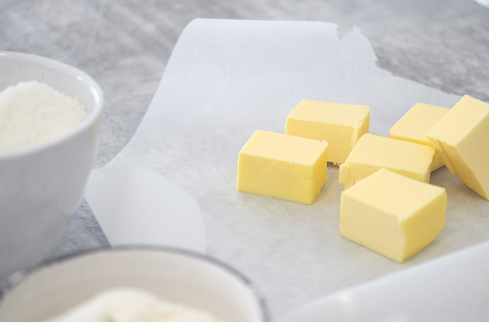
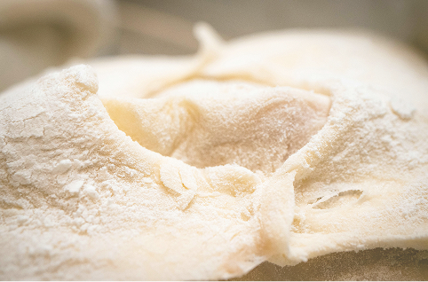
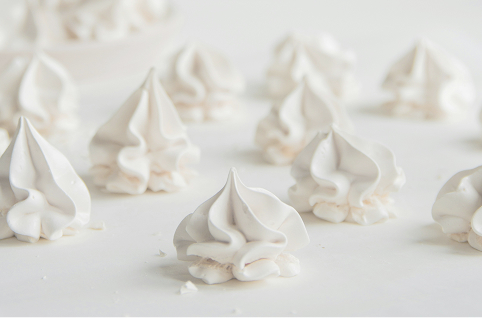
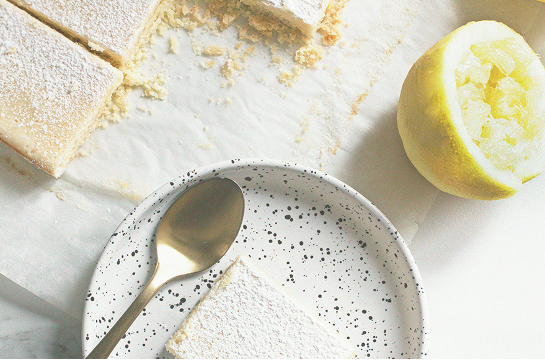
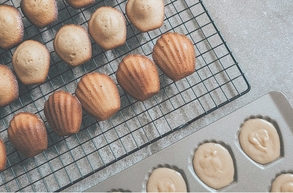
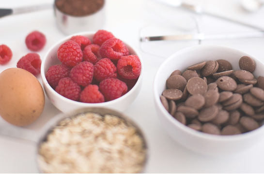
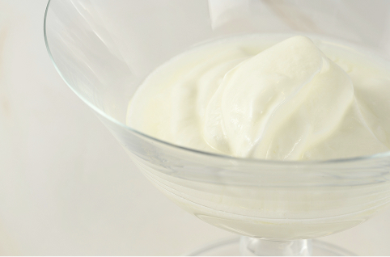

發源與理念
—尋找生活中的「小小的溫柔」
在忙碌而快速運轉的城市裡，我們總是在追尋一個可以按下暫停鍵的理由。Petite Douceur的誕生，正是源於一份對日常美好的渴望。創辦人深信，真正的幸福，往往藏在那些不需聲 張、卻充滿療癒力量的片刻中。我們的目標很簡單：用一塊純手工、精緻可愛的甜點，為您的生活創造一個溫柔的儀式。輕咬一口，就能從視覺的精緻、到味覺的層次中，找回那份屬於自己的 寧靜與美好。



手工的堅持
—奶油感設計與專業的平衡
「可愛」與「精緻專業」從不衝突。在Petite Douceur的廚房裡，每一顆甜點都是我們對「純手工」的嚴苛承諾。我們堅持選用頂級天然食材，以傳統工藝融合現代美學，打造出如藝術品般精緻、充滿奶油感療癒色彩的甜點。每一個圓潤的線條、每一層細膩的內餡、每一抹柔和的色彩，都經過甜點師的精心雕琢。這份對細節的專注，不僅體現了我們的專業態度，更確保了您所品嚐到的，是從外觀到口感都無可挑剔的高品質體驗。


與顧客的連結
—讓美好在社群與餐桌上綻放
Petite Douceur不僅販售甜點，我們更販售一份值得被記錄和分享的喜悅。我們深知您追求美感的生活態度，因此，我們的甜點被設計成最完美的打卡主角。無論是您在門市預約享受的下午茶時光、還是帶回家與親友共享的節慶禮盒，都希望能成為您社群動態中最吸睛的一道風景。我們誠摯邀請您，將這份「小小的甜美」帶入您的生活，與我們一同，讓這份溫柔的甜點，成為您療癒自己、表達愛意的最佳方式。


